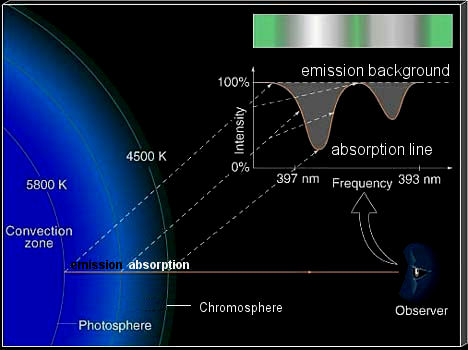
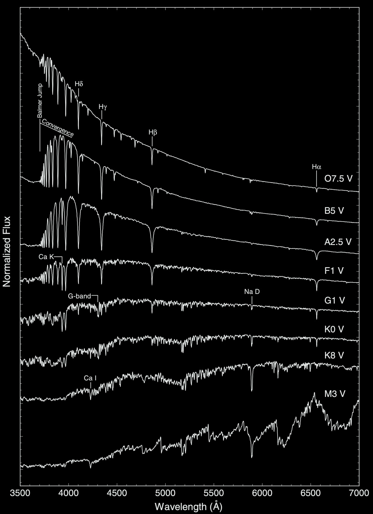
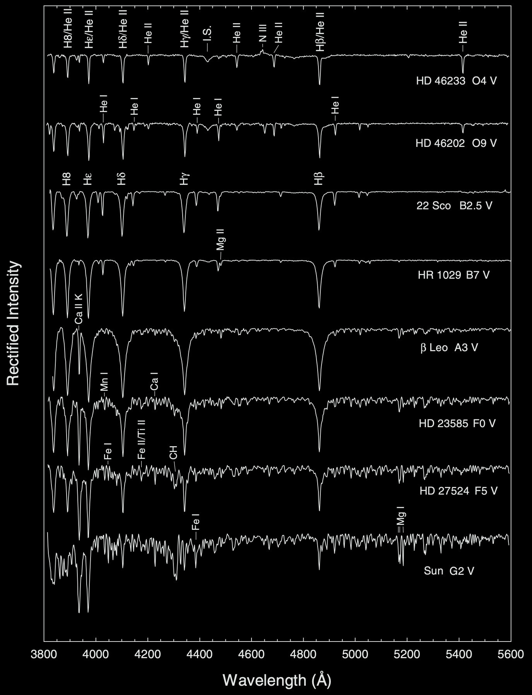
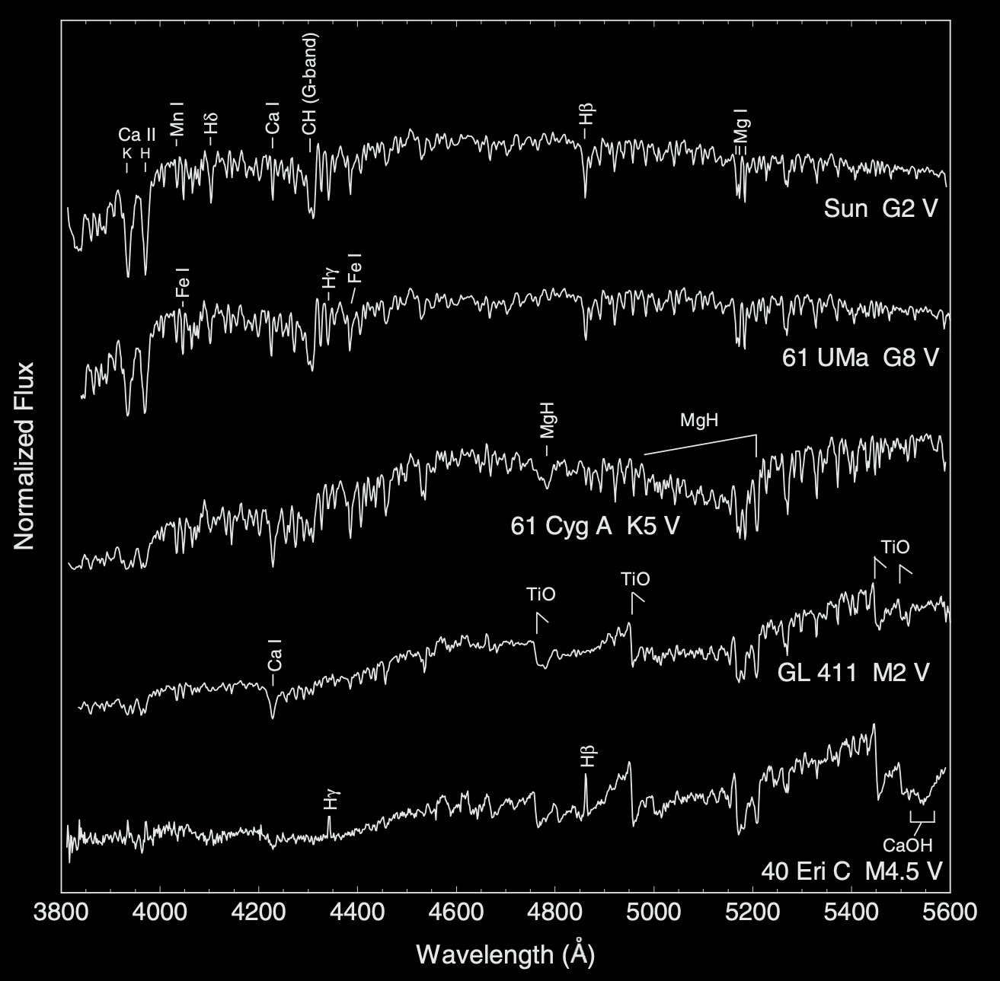
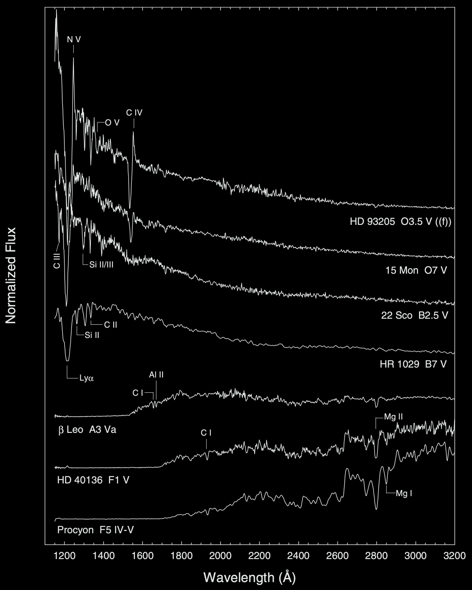
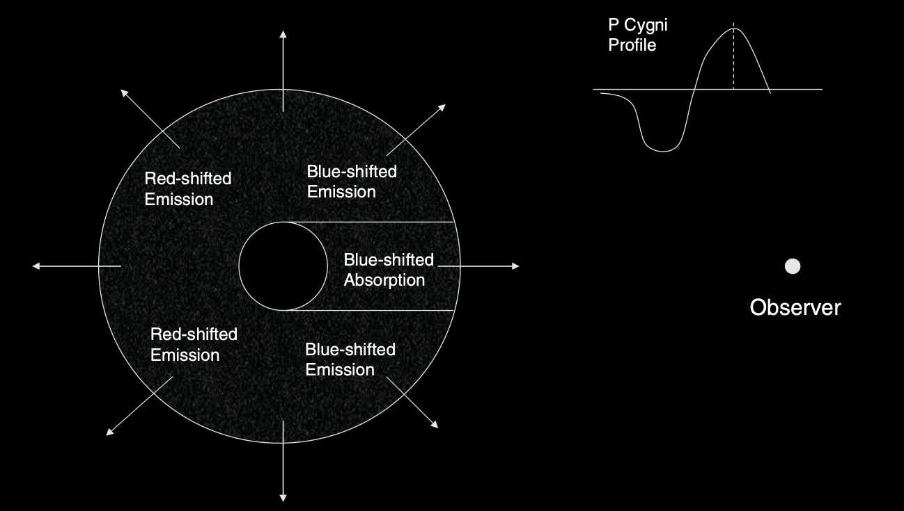
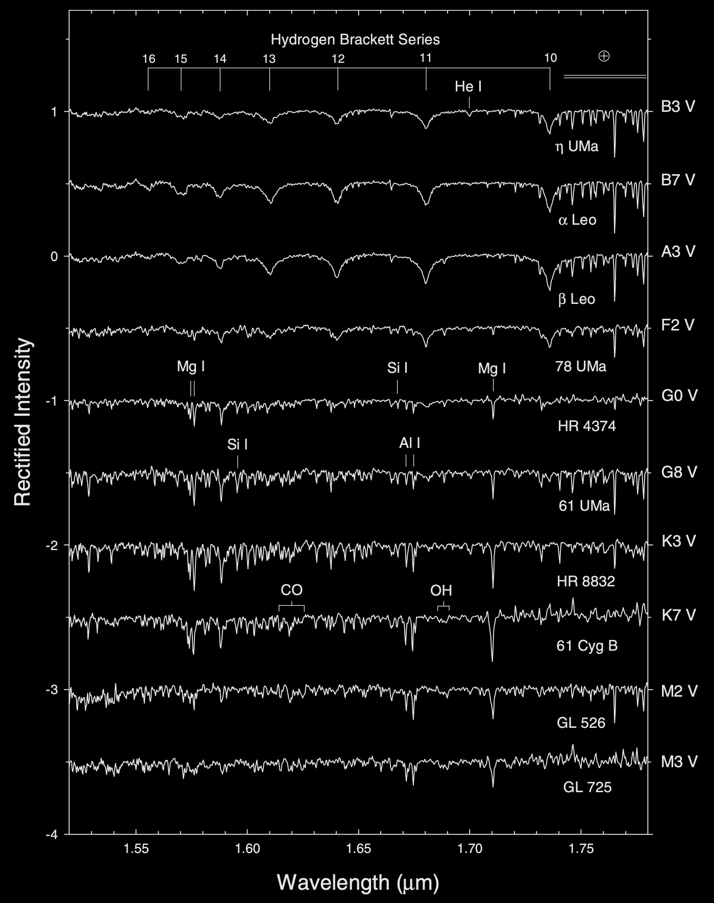
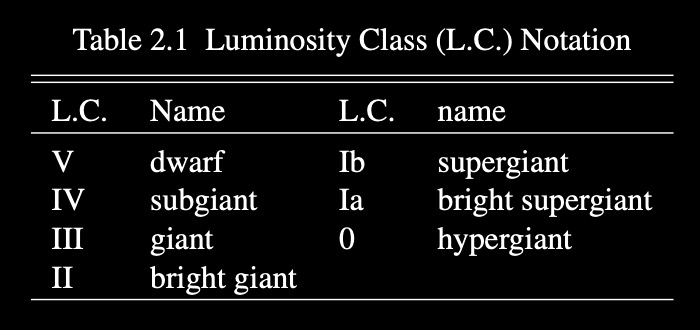
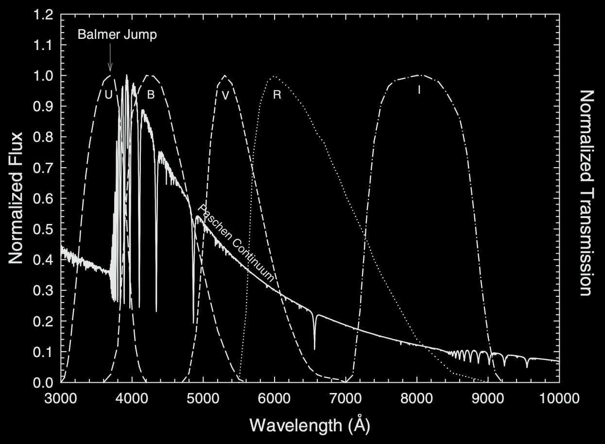

Stellar Spectra II#
Notes following Stellar Spectral Classification by Gray and Corbally Chapter 2, Sec. 2.1-2.4.
Friday, Apr. 25, 2025
astrophysics of stars and planets - spring 2025 - university of arizona, steward observatory
Today’s Agenda#
Announcements - Final Projects Due to D2L May 2 / HW5 posted (2m)
Reading Overview/Key Points (20m)
Last ICA - ICA 29 - Stellar Spectra (20m)
Debrief + Share Results (5m)
An Overview of Normal Stars#
{kind=link}
Absorption Lines Formation Diagram.
Refresher about the Morgan–Keenan (MK) Classification Scheme:#
The MK classification scheme (Our Bright Astronomers Frequently Generate Killer Mnemonics!) is a scheme to classify stars using the letters:
O, B, A, F, G, K, and M - from hottest (O) to the coolest (M) - the x - axis of an HR diagram.
with subclasses - G0, G1, etc. again from hotter to cooler.
and luminosity classes from 0 to VII from brightest to dimmest.

Credit: By Richard Powell - The Hertzsprung Russell Diagram, CC BY-SA 2.5.
The Spectral Sequence#
{kind=link}
Stellar spectra in “normalized flux” format, in which the stellar fluxes have been normalized to unity at one common point.
Conceptual Question: At which evolutionary phase are these spectra, how can we tell, and which would be closest in representaion to the Sun?
Main sequence (dwarf stars), luminosity class V, G1V star.
The Main-Sequence and the Sun#
Early Type Stars: stars hotter than the Sun
{kind=link}
Spectra in “rectified” format, in which the intensity of the continuum points (i.e., the points not affected by line absorption) has been normalized to unity.
A few key takeaways:
in the hottest normal stars - O type - the hydrogen Balmer lines (H\(\beta\), H\(\gamma\), \(H\gamma\), and \(H\epsilon\), etc.) blend with the Pickering series of He II.
With decreasing temperature (later spectral type), the Balmer lines increase in strength, peaking in early A-type stars before rapidly fading away.
in A-type stars, we also begin to see the presence of strong metal lines, lines such as the Ca II K lines, along with other intermediate metals are used to help classify stellar spectra.
Lastly, spectral features due to molecules start to appear in early F-type stars, such as the diatomic molecule CH often called the G-band.
M-type spectra are dominated by strong TiO bands due to their cool atmospheres.
Late Type Stars:
{kind=link}
Sequences in the Ultraviolet and Infrared#
In the ideal case, it is the case that you want to classify a star in region of the spectrum where its energy distribution peaks.
For hot O- and B-type stars this is typically in the ultraviolet (UV).
A- through K-type stars in the optical (shown above).
And M-type and later in the red and infrared.
Spectroscopic Notation#
Neutral atom of Ne is given as Ne I, with the singly ionzed Ne would be Ne II and so on.
We will look at a few examples of these below:
The ultraviolet#
{kind=link}
The Main Sequence in the ultraviolet.
The C IV shows the presence of a P Cygni profile, a signature of stellar winds stronger in early-type MS stars. We also see this for the N V line.
P Cygni Profile
{kind=link}
The absorption component is formed in the cylinder of expanding gas that we see in front of the stellar disk and the emission component from the remainder of the expanding shell.
The strongest line in the ultraviolet for B-type stars is the hydrogen Lyman\(\alpha\) line at \(1216\) Angstrom.
The infrared#
{kind=link}
The Main Sequence in the H-band infrared.
the spectra of early-type stars in the infrared H-band are dominated by hydrogen in the Brackett series (transitions out of the \(n-4\) atomic level as opposed the \(n=2\) atomic level in the Balmer series).
the evolution of these lines are similar the the balmer series in the optical, peaking near A type then decreasing for later type stars.
metal lines due to neutral metals strengthen up to K7.
TiO which dominantes in the optical for M dwarfs doesnt show in the infrared, other molecules do - CO and OH.
Luminosity Classes#
{kind=link}
We can define two types of luminosity effects:
Positive Luminosity Effect: Define as a spectral feature that increases in strength with increasing luminosity class - V to III to I.
Negative Luminosity Effect: Conversely, if a spectral feature decreases in strength with increasing luminosity class. One example being the hydrogen lines in early A-type stars which peak near this type.
Multi-color Photometry and Stellar Classification#
There are many other ways to characterize stars, especially in the absence of spectra! One method includes multicolor photometry, the use of measurements of stellar brightnesses or fluxes in certain spectral bands.
{kind=link}
The normalized Johnson–Cousins \(U B V R I\) photometric passbands (right-hand scale) plotted with the spectral energy distribution of an A0 V star (left-hand scale).
There are many photometric systems like those for SDSS (\(ugriz\)) are often calibrated to the mission/instruments.
A combination of methods are often the best possible means of classification. Photometry can measure continuum features in a stellar spectrum, such as the slope of the Paschen continuum, the Balmer jump. While Spectral Classification often relies on the appearance of the line spectrum.
In-Class Assignment 29#
In-Class Assignment 29 can be found here.